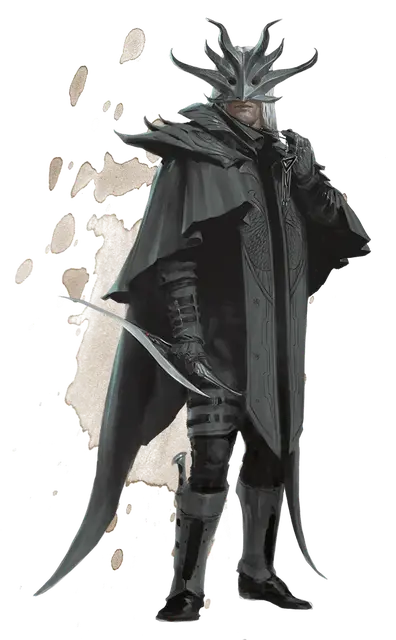

Культист
Cultist
Средний Гуманоид (Любая раса), нейтральный

Класс Доспеха 12 (кожаный доспех)
Хиты 9 (2к8)
Скорость 30 футов
| мод | спас | ||
|---|---|---|---|
| СИЛ | 11 | +0 | +0 |
| ЛОВ | 12 | +1 | +1 |
| ТЕЛ | 10 | +0 | +0 |
| мод | спас | ||
|---|---|---|---|
| ИНТ | 10 | +0 | +0 |
| МДР | 11 | +0 | +0 |
| ХАР | 10 | +0 | +0 |
Навыки Обман +2, Религия +2
Чувства пассивное Восприятие 10
Языки Общий
Опасность 1/8 (25 опыта)
Бонус мастерства +2
Среда обитания Город
Особенности
Тёмная преданность. Культист совершает с преимуществом спасброски от очарования и испуга.
Действия
Скимитар. Рукопашная атака оружием: +3 к попаданию, досягаемость 5 футов, одна цель. Попадание: 4 (1к6 + 1) рубящего урона.
Описание
Культисты присягнули на верность темным силам. Они скрывают свою деятельность, чтобы избежать изгнания, заключения в тюрьму или казни за их веру.